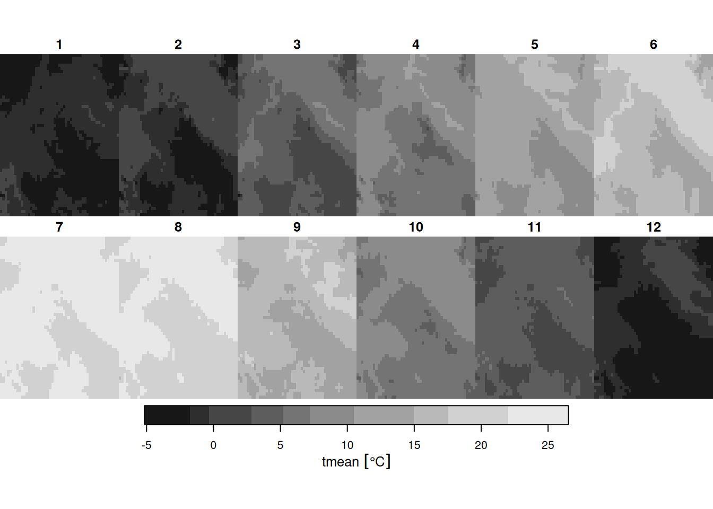
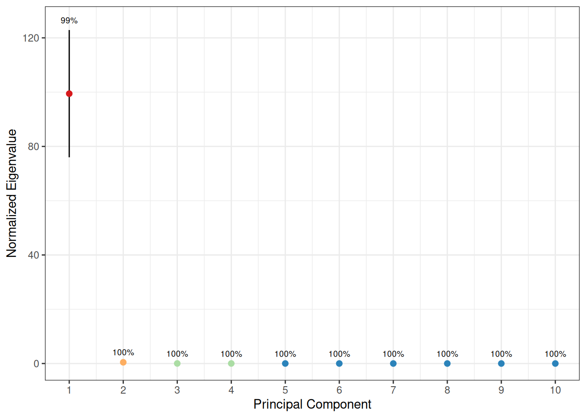
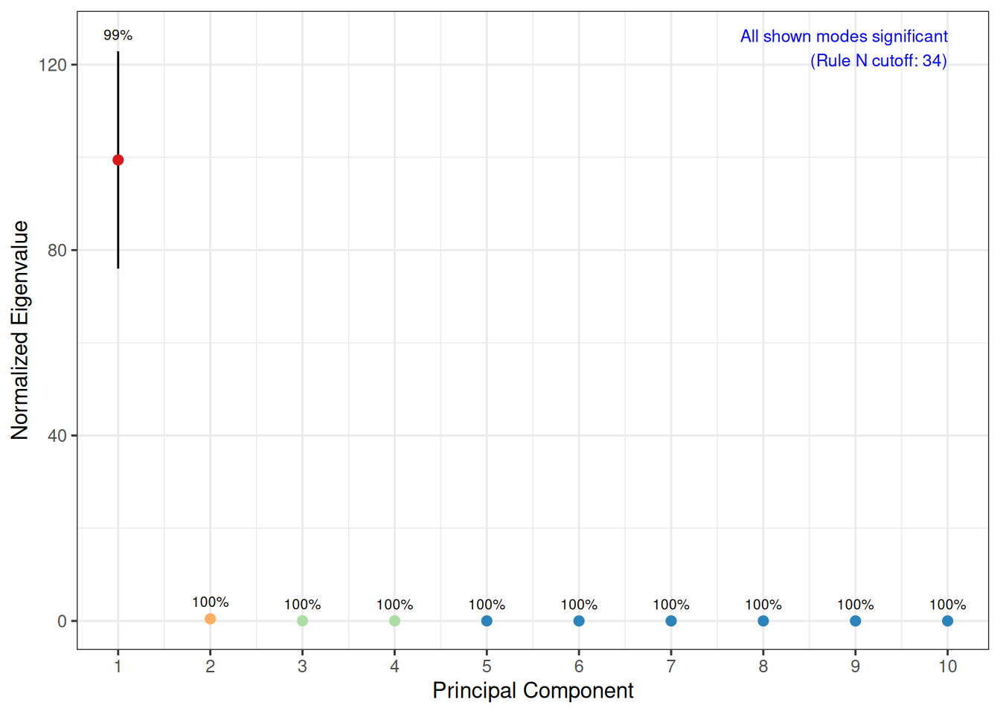
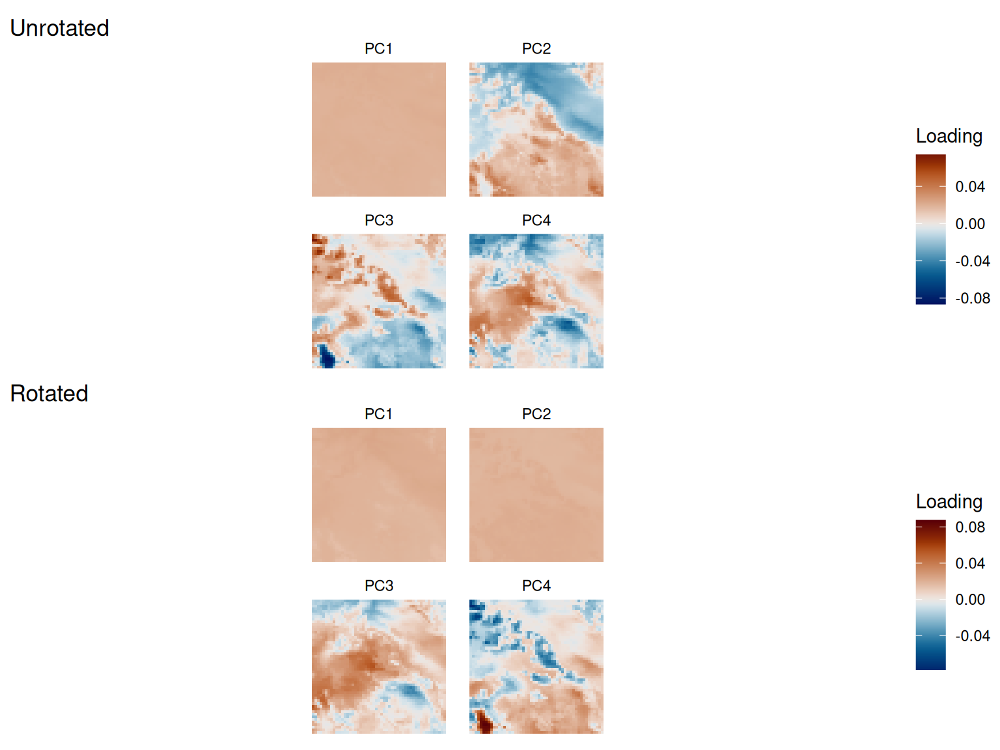

Overview
tidyeof provides tools for Empirical Orthogonal Function (EOF) analysis of spatiotemporal data stored as stars objects. EOF analysis decomposes a spatiotemporal field into:
- Spatial patterns (EOFs) – the dominant modes of variability
- Time series (principal components) – how each mode evolves over time
- Eigenvalues – how much variance each mode explains
This vignette covers the core EOF workflow: extracting patterns, interpreting results, and reconstructing fields.
Example data
The package includes a small test dataset: PRISM monthly mean temperature over a portion of western North America (51 x 51 grid, 36 months).
temp <- system.file("testdata/prism_test.RDS", package = "tidyeof") |>
readRDS()
tempstars object with 3 dimensions and 1 attribute
attribute(s):
Min. 1st Qu. Median Mean 3rd Qu. Max.
tmean [°C] -8.343 1.679 7.57895 8.945718 16.253 27.791
dimension(s):
from to offset delta refsys values x/y
x 50 100 -120 0.04167 NAD83 NULL [x]
y 50 100 46.02 -0.04167 NAD83 NULL [y]
time 1 36 NA NA Date 2017-01-01,...,2019-12-01 Climatology and anomalies
Before EOF analysis, it helps to understand the climatological baseline. get_climatology() returns a list with mean and sd stars objects.
# Annual climatology
clim <- get_climatology(temp)
plot(clim$mean, main = "Mean temperature")
Monthly climatology captures the seasonal cycle:
monthly_clim <- get_climatology(temp, monthly = TRUE)
plot(monthly_clim$mean)
Anomalies are the departure from climatology. The scale option additionally divides by the standard deviation, producing standardized anomalies.
anom <- get_anomalies(temp)
anom_scaled <- get_anomalies(temp, scale = TRUE)You can restore the original field from anomalies and climatology – they are exact inverses:
restored <- restore_climatology(anom, clim)
max(abs(temp[[1]] - restored[[1]]), na.rm = TRUE) # ~machine epsilon1.776357e-15 [°C]Extracting patterns
The main function is patterns(). It handles anomalization, optional area weighting, PCA, and optional varimax rotation internally.
pat <- patterns(temp, k = 4)
pat── Patterns Object ─────────────────────────────────────────────────────────────Modes: 4Variables: tmeanTime steps: 36 (2017-01-01 to 2019-12-01)── Processing Options ──Scale: FALSEMonthly: FALSERotated: FALSEArea weighted: TRUE── Eigenvalues (% variance) ──99.4, 0.4, 0, and 0Key arguments:
-
k– number of modes to retain -
scale– standardize anomalies before PCA (useful when combining variables with different units) -
rotate– apply varimax rotation for more localized, interpretable patterns -
monthly– use monthly climatology for anomalization -
weight– area-weight grid cells (default TRUE; accounts for latitude-dependent cell area)
Plotting
The plot() method produces a combined view of spatial patterns and amplitude time series:
plot(pat)
You can plot EOFs or amplitudes separately:
plot(pat, type = "eofs")
plot(pat, type = "amplitudes")
Amplitude scaling options control the y-axis:
-
"standardized"(default) – unit variance -
"variance"– scaled by sqrt(eigenvalue), showing relative variance contribution -
"raw"– back-projected to original data units
plot(pat, type = "amplitudes", scale = "variance")
Scree plot and significance
The scree plot shows eigenvalues with North et al. (1982) error bars. Overlapping error bars indicate modes that form a degenerate multiplet and should not be interpreted individually.
screeplot(pat)
The rule_n option adds a blue dashed line showing the modified Rule N significance boundary (based on the Tracy-Widom distribution). Modes to the left of this line are statistically distinguishable from noise.
screeplot(pat, rule_n = TRUE)
You can also test individual eigenvalues directly:
# Is the 3rd eigenvalue significant at p = 0.05?
eigen_test(
pat$eigenvalues$eigenvalues,
k = 3,
M = length(pat$valid_pixels),
n = nrow(pat$amplitudes)
)[1] TRUERotation
Unrotated EOFs are orthogonal, which is a mathematical convenience but not always physically meaningful. Varimax rotation relaxes the orthogonality constraint on spatial patterns (while keeping amplitudes uncorrelated), often producing more localized and interpretable modes.
Compare rotated vs unrotated patterns:
p1 <- plot(pat, type = "eofs") + ggtitle("Unrotated")
p2 <- plot(pat_rot, type = "eofs") + ggtitle("Rotated")
patchwork::wrap_plots(p1, p2, ncol = 1)
Subsetting patterns
Use [ to extract a subset of modes. This is useful for focusing on the leading modes or for truncation experiments.
pat_sub <- pat[1:2]
pat_sub── Patterns Object ─────────────────────────────────────────────────────────────Modes: 2Variables: tmeanTime steps: 36 (2017-01-01 to 2019-12-01)── Processing Options ──Scale: FALSEMonthly: FALSERotated: FALSEArea weighted: TRUE── Eigenvalues (% variance) ──99.4 and 0.4Reconstruction
reconstruct() multiplies amplitudes by EOF patterns and adds back the climatology, recovering the spatial field.
recon <- reconstruct(pat)With fewer modes, the reconstruction is a smoothed approximation of the original field. The reconstruction error decreases as more modes are retained:
errors <- sapply(1:4, function(k) {
recon_k <- reconstruct(pat[1:k])
sqrt(mean((temp[[1]] - recon_k[[1]])^2, na.rm = TRUE))
})
data.frame(k = 1:4, rmse = round(errors, 4)) k rmse
1 1 0.6414
2 2 0.2845
3 3 0.2469
4 4 0.2112For bounded variables like precipitation, the reconstructed field may contain small negative values from truncation. To clamp these:
# pmax(.x, 0 * .x) preserves units
recon |> mutate(across(everything(), ~pmax(.x, 0 * .x)))Projection
project_patterns() projects new data onto an existing set of EOF patterns, returning amplitudes. This is useful for comparing how a new time period or different dataset maps onto previously-identified modes.
# Project the original data back onto its own patterns (should recover stored amplitudes)
projected <- project_patterns(pat, temp)
all.equal(projected, pat$amplitudes, tolerance = 1e-10)[1] "Attributes: < Component \"class\": Lengths (3, 1) differ (string compare on first 1) >"
[2] "Attributes: < Component \"class\": 1 string mismatch >" Teleconnections
get_correlation() computes pixel-wise correlations between a spatial field and each PC time series. This is the classic teleconnection map – it shows where each mode has spatial influence.
cor_maps <- get_correlation(temp, pat)
ggplot() +
geom_stars(data = cor_maps) +
facet_wrap(~PC) +
scale_fill_distiller(palette = "RdBu", limits = c(-1, 1), na.value = NA) +
coord_sf() +
theme_void() +
labs(fill = "r")
get_fdr() adds field significance testing with FDR (false discovery rate) correction, returning significance contour polygons:
fdr_contours <- get_fdr(temp, pat, fdr = 0.1)Warning in min(bb[, 1L], na.rm = TRUE): no non-missing arguments to min;
returning InfWarning in min(bb[, 2L], na.rm = TRUE): no non-missing arguments to min;
returning InfWarning in max(bb[, 3L], na.rm = TRUE): no non-missing arguments to max;
returning -InfWarning in max(bb[, 4L], na.rm = TRUE): no non-missing arguments to max;
returning -Inf
ggplot() +
geom_stars(data = cor_maps) +
geom_sf(data = fdr_contours, fill = NA, color = "black", linewidth = 0.5) +
facet_wrap(~PC) +
scale_fill_distiller(palette = "RdBu", limits = c(-1, 1), na.value = NA) +
coord_sf() +
theme_void() +
labs(fill = "r")
Area weighting
By default, patterns() applies area weighting using sqrt(cell_area / mean_area). This ensures that grid cells at high latitudes (which cover less area on a regular lat/lon grid) don’t dominate the PCA. You can access the weights directly:
w <- area_weights(temp)
plot(w, main = "Area weights")
Disable weighting with weight = FALSE if your data is already on an equal-area grid or if you want unweighted PCA.
Overlays
The plot() method accepts an overlay argument for adding geographic context (coastlines, state boundaries, etc.):
References
- North, G.R., Bell, T.L., Cahalan, R.F., & Moeng, F.J. (1982). Sampling errors in the estimation of empirical orthogonal functions. Monthly Weather Review, 110(7), 699-706.
- Hannachi, A., Jolliffe, I.T., & Stephenson, D.B. (2007). Empirical orthogonal functions and related techniques in atmospheric science: A review. International Journal of Climatology, 27(9), 1119-1152.
- Wilks, D.S. (2011). Statistical Methods in the Atmospheric Sciences (3rd ed.). Academic Press.